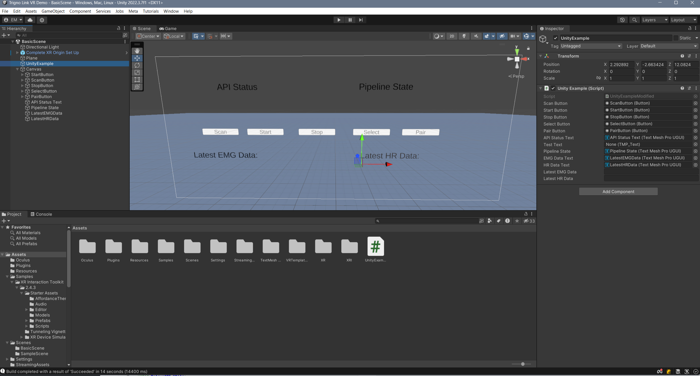
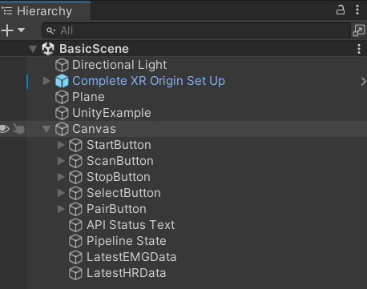

Integration with VR
Now that you have successfully managed to create a simple 2D application that integrates the Trigno Link and some physiological sensors, it is time to take what you know and apply it to a virtual reality project. The core principles used are exactly the same as with the 2D application, it is just a matter of modifying the approach to create a VR app instead.
Creating A New VR Project with Delsys API
In order to properly set up your VR project for physiological sensor integration, you will be combining the steps used in modules 2 and 4 to build your project. The combined instructions will be repeated below for your convenience:

Launch Unity Hub and login to your Unity account. If you do not have either of these completed, see Installing Unity.

On the sidebar on the left side of the application, select the Projects tab.
On the top right of the application, press the button titled New project.

Under the templates section, select the VR Core option. You may have to download the template if you have not used it already. The button to download it can be seen on the right side of the application after clicking on the template.
Choose a name for your project. It can be anything you like.
Choose the where you’d like to store your project. Be sure to pick a location that is easy to find.
Click the Create project button in the bottom right corner of the application. This will create the project and launch the editor, which will contain a pre-made sample scene for you to start with.
In the editor, navigate to the Edit option in the top ribbon, and select Project Settings from the dropdown menu.

In the project settings menu, select the option on the right toolbar titled Player. In the menu for your selected platform (in this case Windows, Mac, and Linux), scroll down to the Configuration section. In this location, make sure the Scripting Backend is set to IL2CPP and that the Api Compatibility Level is set to .NET Framework. Your project may take a minute to apply these changes.

In the assets folder of your Unity project, add an empty folder called Plugins. This is where you will put the API files.

To get the API files you will need to add to your project, go to the Delsys Example Applications Github page. Select the green button labeled Code, and select the Download ZIP option from the dropdown menu that appears. This should download a ZIP file containing the example projects, as well as the API files you’ll need.
Right click the ZIP file you just downloaded in your file explorer, and Extract it. In Windows 11, this is done through an option called Extract All… in the right click menu.

Open the extracted folder, and navigate to the
~\Example-Applications-main\Unity\Assetssubdirectory.Copy the Streaming Assets folder into your project’s assets folder.
Navigate to the
~\Example-Applications-main\Unity\Assets\Pluginsfolder and copy everything contained in it to the Plugins folder you created for your project.

In the plugins folder in your project, delete the file called System.CodeDom.dll and its associated meta file System.CodeDom.dll.meta. Delete System.Reactive.Linq.dll and its associated meta file System.Reactive.Linq.dll.meta. Delete System.Management.dll and its associated meta file System.Management.dll.meta.

In the plugins folder in your project, Move the file called SiUSBXp.dll and its associated meta file SiUSBXp.dll.meta to the root folder of your project. This should result in something looking like the image above.

Lastly, copy the modified UnityExample.cs script from the project you created in the previous module into the Assets folder of your project. This way, you do not have to reimplement Trigno Link functionality.
Allow your Unity project time to reload its domain, and then ensure there are no compilation errors with the project (You may see warnings, indicated with a yellow exclamation mark, these are okay). If there are none, you are ready to move on. If not, retry the steps above on a different version of Unity or try and troubleshoot the compilation error using the Troubleshooting Resources page of this site.
Note
A VR project built using the Delsys API must use the Windows build platform. This is necessary because the base station and Trigno Link are connected to your PC via USB, and therefore your VR headset must be connected to your PC as well. This requirement prevents a standalone Android application from being an option. Meta Quest Link was used to connect the VR headset to the PC for these applications, but for a different brand of headset you may need an alternative method to run your application. Your project should already be set to the Windoos build platform be default, but this information is important regardless.
A Simple VR Application
You will be building off of the BasicScene included in the VR template. This can be found in the Scenes folder located in the Assets folder in the Project Window. Note that by default, Unity will load the SampleScene, so you must change scenes. Since most of the work for this project was completed in the previous module, you only have to make slight changes to the copied Example script and set up your GameObject s to get this VR project up and running. You can find the Unity project on our GitHub page.
Slightly Modifying the Example Script
There are very few changes to make here, and they are as follows.
Add two new variables to the example script, called public string latestEMGData; and public string latestHRData; . These will display the incoming data from the EMG and heart rate sensors in VR.
Update the line public TMP_Text APIStatusText, TestText, PipelineState to include EMGDataText, HRDataText. The edited line should read as follows: public TMP_Text APIStatusText, TestText, PipelineState, EMGDataText, HRDataText.
Modify the update function to include the last two lines:
void Update()
{
APIStatusText.text = text;
SelectButton.enabled = select;
ScanButton.enabled = scan;
StartButton.enabled = start;
StopButton.enabled = stop;
PairButton.enabled = pair;
PipelineState.text = PipelineController.Instance.PipelineIds[0].CurrentState.ToString();
EMGDataText.text = "Latest EMG Data: " + latestEMGData;
HRDataText.text = "Latest HR Data: " + latestHRData;
}
These lines will update the text displaying the data every frame the application is running.
Lastly, modify the CollectionDataReady method to collect the data in real time, as discussed in the previous module. It should look like this, if you are collecting the data using the sensor indices:
public virtual void CollectionDataReady(object sender, ComponentDataReadyEventArgs e)
{
//Channel based list of data for this frame interval
List<List<double>> data = new List<List<double>>();
for (int k = 0; k < e.Data.Count(); k++)
{
// Loops through each connected sensor
for (int i = 0; i < e.Data[k].SensorData.Count(); i++)
{
// Loops through each channel for a sensor
for (int j = 0; j < e.Data[k].SensorData[i].ChannelData.Count(); j++)
{
data.Add(e.Data[k].SensorData[i].ChannelData[j].Data);
for (int k2 = 0; k2 <e.Data[k].SensorData[i].ChannelData[j].Data.Count(); k2++){
if (i == 1)//Heart Rate Sensor Index
{
latestHRData = e.Data[k].SensorData[i].ChannelData[j].Data[k2].ToString();
}
else if (i == 0)//Avanti Sensor Index
{
latestEMGData = e.Data[k].SensorData[i].ChannelData[j].Data[k2].ToString();
}
Debug.Log(e.Data[k].SensorData[i].ChannelData[j].Data[k2]);
}
}
}
}
That’s every modification you need to make, and you are ready to move on to adding GameObject s.
Adding GameObjects
{kind=link}
You will need a similar set of GameObject s as in the previous module, however there are important differences that will meaningfully affect your project so please read carefully:
Directional Light and Plane: These provide the lighting and surface the player stands on, and should be included in the BasicScene by default.
A UI Canvas: This will function the same as the canvas from the last module, and will contain your text and buttons. The only difference being that this canvas contains a Tracked Graphic Device Raycaster that allows it to work in VR (You may recall hearing about this in module 2). You can find a canvas that has one prebuilt by right clicking in the object hierarchy, clicking XR in the dropdown, and selecting UI Canvas. Or, you can add one to any regular canvas by searching for it in the Add Component menu. Again, all your buttons and texts will be children of this object.
A Complete XR Origin Set Up: This contains the event system, main camera, and player controller for the VR application. This should be included in the BasicScene preset provided with the template, but if it isn’t you can search for it in the Project window, assuming you have all of the OpenXR packages installed that come with the template.
A Unity Example Object: Just like with the previous module, this is the most important object for the integration, and should be an empty object with the modified example script attached.
Scan, Start, Pair, Stop, and Select Buttons: You will need the same set of five buttons as before, with their names matching their corresponding references in the Unity Example Script. The only difference here is that their texts will located in a child object titled Text (TMP) instead of being directly on the button.
API Status and Pipeline State Texts: Exactly the same as the previous module. Make sure to drag and drop them into their respective slots in the script component of the Unity Example Object.
Latest EMG Data Text: Since you no longer have access to the Unity Console in VR, you will want a new way to display the incoming data for your EMG and heart rate sensors. Assign this to its appropriate slot in the script component of the Unity Example Object.
Latest HR Data Text: The same case as the latest EMG Data Text, except used to display incoming HR data. Make sure to assign it to its appropriate slot in the script component of the Unity Example Object.
At the end of the object creation, your object hierarchy should look like the following:
{kind=link}
And, your Unity Example Script Object’s script component should have the following filled in for it’s public variable slots. You can drag and drop any of the objects that are missing or incorrectly placed in the slots from the object hierarchy into the slots:

Running the Application
[Click on the above video for our YouTube tutorial on the Trigno Link Example Project.]
While running the project may differ depending on your headset, no matter what you are going to have to build to the Windows platform. Here is how to do that:
On the ribbon in the top left of the editor, select the File option. This will open a drop-down menu with several options.

In the drop-down menu that appears, select the Build Settings option. This will open the build settings in a new window.

Make sure that the build platform in the bottom right corner of the menu is set to Windows, Linux, and Mac.
When you are ready to build your project, return to the build settings window and make sure that the seleected scene to build is BasicScene and not SampleScene. These options are found at the top of the menu. Then select the Build button. Unity will ask you to choose a location to store your new build. It is recommended that you make a folder to contain the build, because you may lose files otherwise. The main piece to pay attention to is the .EXE file that is produced. This is how you actually run the application. If you are using a Meta Quest 2, you can hook your headset up to your PC with a USB-C cable or use Air Link to connect to Quest Link. Then, simply run the EXE from your computer and it will appear on the headset. You will also need the Quest Link application on your computer, and the hardware to run it. You can find out more here. If you are using another type of headset, look up how your device can run Windows applications, as the process will be different.
Note
The Delsys API is only natively supported with Windows applications. Using unsupported platforms could prevent its usage.
A Large Scale Project for Inspiration
[Click on the above video for our YouTube video on the VR Maze using EMG and HR Data.]
While the example project you created above may only serve to display the data from the EMG and HR sensors, that is only the tip of the iceberg for potential creations using physiological sensors and the Delsys API. Here is a more complex application, similar to the VR Maze you saw back in module two that integrates both EMG and heart rate sensors to control player movement. Hopefully this gives you some inspiration for your own applications! You can find the Unity project on our GitHub page.
Section Review
In this module, you learned how to successfully integrate physiological sensing with virtual reality in Unity. This is the aggregation of all of the Unity work you have done in the past, and will prepare you to make your own VR applications using physiological sensors. The final module will teach you about proper data analysis techniques, so that you can ensure any data you collect from the sensors provides you with meaningful results. This is the final stretch, hang in there!